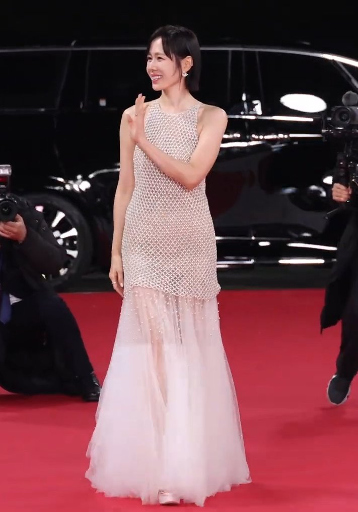
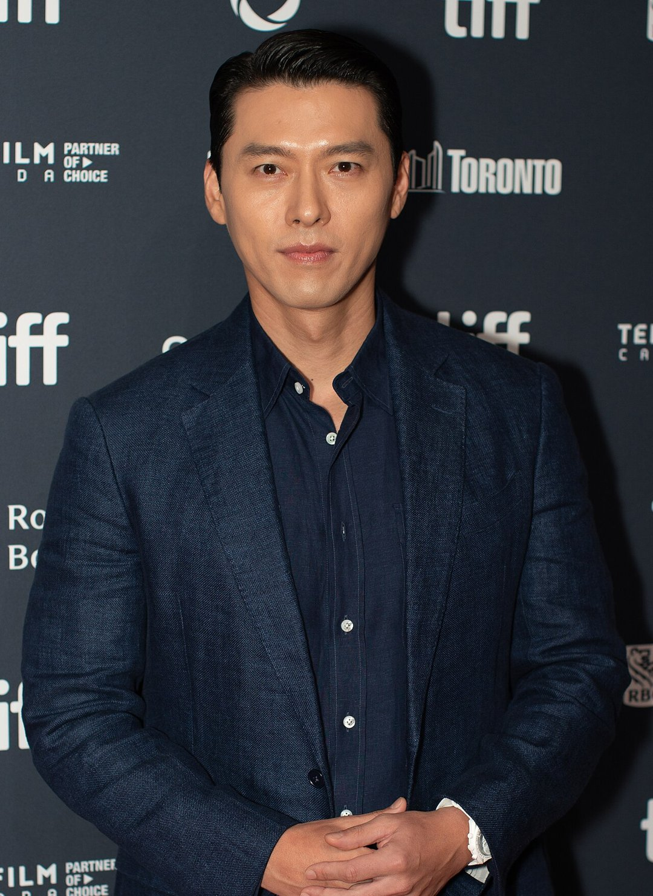

'협상', '사랑의 불시착'에 이어 현빈과 손예진이 또 한 작품에서 만난다면 어떤 이야기일까요? 지난 3일 제47회 청룡영화상 핸드프린팅 행사에서 두 사람이 직접 답을 내놨어요. 둘의 답은 꽤 달랐어요.
📷 사진 1 자리
▲ 2025년 11월 19일 제46회 청룡영화상에 참석한 손예진 / 사진: 티비텐 TV10 / CC BY-SA 4.0 / 위키미디어 공용
1년 전 청룡에서 생긴 기록
이날 핸드프린팅은 지난해 시상식 수상자들이 손도장을 남기는 자리였어요. 현빈은 '하얼빈'으로 남우주연상, 손예진은 '어쩔수가없다'로 여우주연상을 받았죠. 청룡영화상에서 부부가 남녀주연상을 함께 받은 건 이때가 처음이었어요.
손예진에게는 약 20년 만의 두 번째 여우주연상이었어요. 손예진은 데뷔 때 꿈이 '오디션 안 보기'와 '청룡영화상 받기' 두 가지였다며, 다시 받기까지 더 오래 걸렸다는 생각도 들었다고 말했어요. 이날 손예진은 오른손이 아닌 왼손으로 손도장을 찍었어요. 행사에는 이성민, 박지현, 안보현, 김도연도 함께했어요.
'하얼빈' 시절, 서로 "내가 더 힘들었다"
현빈은 '하얼빈'에서 안중근을 연기하면서 서른 살 청년이 어떻게 그런 헌신을 할 수 있었는지 계속 고민했다고 돌아봤어요. 마지막으로 찍은 장면이 사형대에 오르는 장면이었고, 촬영이 끝난 뒤 그동안 쌓인 게 한꺼번에 몰려와 꽤 오래 힘들었다고 해요.
📷 사진 2 자리
▲ 2024년 토론토국제영화제에 참석한 현빈 / 사진: John Sears / CC BY-SA 4.0 / 위키미디어 공용
그 시절 현빈이 힘들어 보였냐는 질문에 손예진은 "제가 더 힘들었다"고 답했어요. 아이를 낳은 지 얼마 안 됐을 때였거든요. 그러면서도 현빈 살이 정말 많이 빠졌던 것, 역사 속 인물을 연기하는 게 얼마나 힘든지 알고 있었던 것을 함께 떠올렸어요. 손예진은 그 시간이 두 사람에게 "성숙한 배우이자 성숙한 부모"가 되는 계기였다고 정리했어요.
세 번째 작품이라면, 둘의 답은 달랐다
다시 같이 출연한다면 어떤 역할이 좋겠냐는 질문에 현빈은 먼저 전에 했던 장르와 소재는 빼겠다고 했어요. 그리고 예전에 같은 질문을 받았을 때 영화 '미스터 & 미세스 스미스' 같은 작품을 떠올렸다고 말했어요. 협상극과 멜로를 이미 함께 했으니, 두 작품과 겹치지 않는 쪽을 고른 셈이죠.
손예진의 답은 정반대였어요. "격렬하게 부부 싸움하는" 부부를 이보다 더 리얼할 수 없게, 다큐처럼 그려 보고 싶다는 거예요. 장르나 캐릭터와 상관없이 다시 만나고 싶다는 말도 덧붙였어요.
▶ 영상 1 자리
각자 다른 배우와 멜로를 찍는다면 어떻겠냐는 질문도 나왔어요. 손예진은 "시켜만 주시면 감사하다"면서도, 현빈이 멜로를 한다면 "고민 좀 해 보겠다"고 받아쳤어요.
✍️ 내 경험 자리 — 직접 보고·듣고 느낀 점 3~5문장으로 바꿔 주세요 (네이버 D.I.A.는 경험이 담긴 글을 우대하고, 경험 없는 글은 검색에서 밀릴 수 있어요)
현빈은 액션 부부물, 손예진은 리얼한 부부 싸움 다큐를 세 번째 작품으로 꼽았어요. 올해 제47회 청룡영화상 시상식은 11월 25일 여의도 KBS홀에서 열려요.

